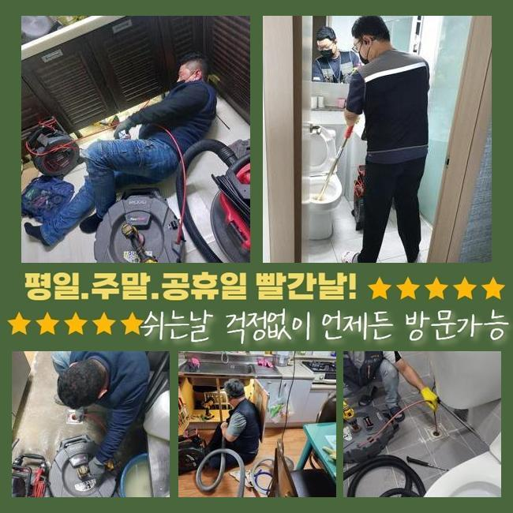
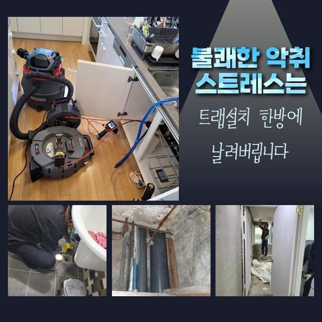
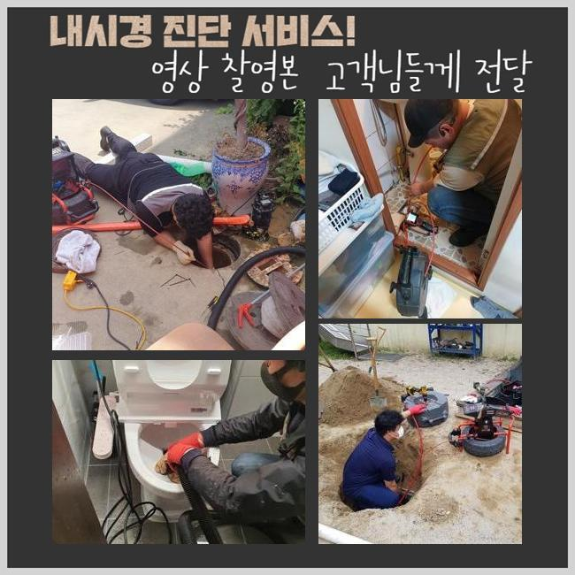
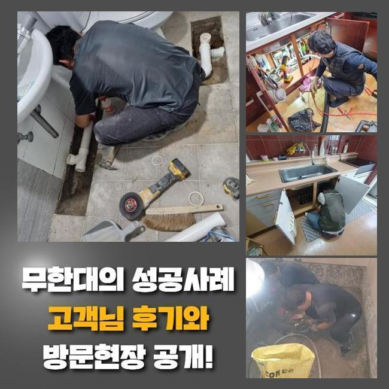
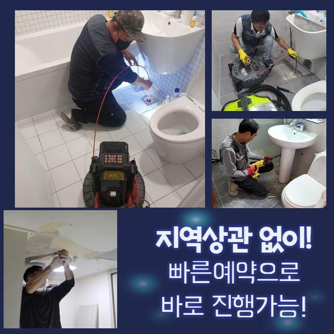
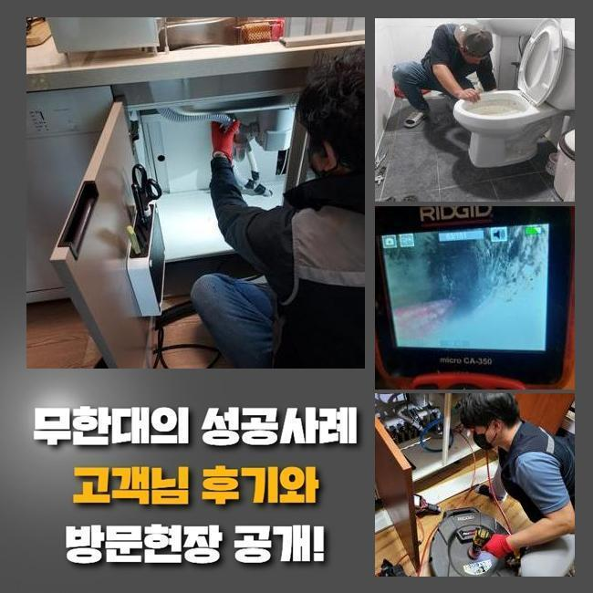
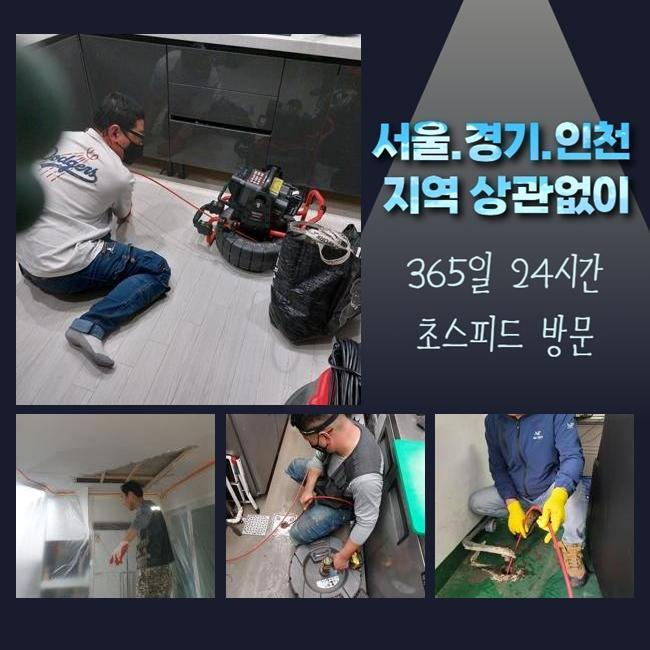

🏠 아산 온천동싱크대배수구역류 염치읍 하수구뚫는업체 출장설비
아산 싱크대막힘 전문 시공 후기

📋 작업 개요
- 위치: 아산
- 서비스 유형: 싱크대막힘, 하수구막힘, 배관막힘, 역류해결, 뚫는업체, 배관청소, 고압세척, 설비공사
- 작업 일시: 2025. 1. 17. 0:31
- 업체명: 하수구수사대 (010-5615-2118)
🔍 문제 상황
아산 온천동싱크대배수구역류 염치읍 하수구뚫는업체 출장설비
일상생활시 때때로 발발하는 고장들이 있습니다
그것중 한가지로 하수관막힘을 말씀드릴수 있어요
배관이 막혀버리면 고약한 냄새가 올라올뿐만 아니라 생활중의 불편을 증가시키죠
하수관이 막힌상황으로 인하여 욕실사용도 어려워지고 역류상황까지 일어난다면 더더욱 문제는 심화될텐데요
이번에는 투룸 세탁실 배관막힘으로 여러가지 기기들을 동원하여 처치한 절차를 설명드리려 해요
의뢰인분은 주방 바로 옆에 설치된 세탁기 배수관에서 배관고장이 생겼다면서 저희측으로 문의하셨는데요
차량안에 샤프트기기와 석션장비 및 내시경설비를 실은 뒤 고객님의 위치로 가게 되었습니다
내부로 진입하니 고약한 냄새가 올라왔고 찌꺼기들이 역류로 흩어진 모습또한 목도하게 되었어요
세탁기를 가동시켜 배수를 시켜보려고 노력했지만 외려 토출되는 사태가 발발하였다고 하소연하셨어요
세탁한 성분만 역류된것이 아니고 크고작은 노폐물까지 방출되는 상태였어요
특정 건물에선 주방시설과 세탁실의 관로가 통하는 상황도 볼수 있답니다
그것에 관계된 부분도 점검해보기로 했죠
사태를 명확히 파악하려 의뢰인분에게 욕실부근이나 여타 배수관에 문제가 생겨났거나 역류등이 일어난적은 없었나 여쭤봤어요

🔎 원인 분석
💡 전문가 진단: 정밀 진단 장비를 사용하여 슬러지의 고착 여부를 판명하고 타격/세척 작업을 실시했습니다.
그저께 물이 안내려가 인터넷에서 구매한 구연산과 세제를 투입해보았다고 하셨는데요
그걸 토대로 분석해본 결과 주방시설쪽의 하수도에 고장의 사유가 있을거라 추정했답니다
저희측이 내방드린 현장의 정체를 처리하려 연유를 파악하기로 합니다
내시경기기를 투입시켜 정체가 생긴 배수관을 조사하기로 한거죠
배수문이 막혀 내부에 내시경을 넣지 못할땐 물청소가 가능한 고압흡입기로 관로의 이물들을 빨아들입니다
해당되는 공정을 토대로 작업시간을 줄여나갈 수 있죠
세척공정 중에 상당량의 찌꺼기들과 잔재들이 배출되었는데요
하지만 해당 업무만으로는 본원적인 막힘의 까닭이 어떠한건지 밝혀내지는 못했죠
일차로 진행한 셕션기기로 정리하지 못하는 것들이 많아서 즉각적으로 내시경cctv를 투입하여서 관로의 상황을 조사하기로 결정합니다
찌꺼기들을 신밀하게 파악해보니 해변가에서 자주보는 흙과 모래같은 것들이었어요
세탁과정에서 누출된 정황일 여지가 높았어요
손님께 휴가를 다녀오셨나 여쭤봤더니 서해쪽 바닷가에서 캠핑을 하셨다고 말하셨어요
우선하여 눈에띄는 이물들을 처리하고 한층 공격적으로 세정시공을 하기로 합니다
그리고 배관깊은 지점까지 소제가능한 기기들을 사용하기로 했습니다

🔧 작업 과정
배관내시경을 사용하는 건 막힘의 사유를 정확히 파악해내고 정체를 해소하기 위해서죠
석션기기로 소제를 이행하고 가는 호스줄에 결속된 내시경을 사용하여 하수관 안쪽을 조사해 보았어요
배관 곳곳을 점검했고 실체적으로 말썽이된 요소를 찾아낼수가 있었어요
이렇듯 관로막힘은 여러 변수에 의하여 발생될수가 있겠고 처리방책이 단조로운것도 아니라고 말씀드려요
그렇기때문에 전문적인 테크닉과 장비를 토대로 수리를 진행하여야 순조롭게 정리할수 있어요
만일에 대충대충 정황을 정리하려든다면 상황이 심화될수 있단걸 기억해주시길 당부드려요
관로 안쪽을 내시경cctv로 진단하였어요
관로의 실측값은 예상한것 보다 큰편이고 구성도 난삽하여 직시해서 검증하기에는 어려움이 있죠
그럴때 작은 내시경기기가 큰 임무를 수행할수가 있는거죠
내시경cctv를 이용해서 내측을 자세하게 파악해보니 여러종류의 슬러지와 흙성분들이 뒤엉켜있는 모습이었습니다
이 슬러지들은 적체되기 쉬우며 관로에 흡착하여 경화되기 쉽답니다
미미한 것들은 배수관을 통해 쉬이 밖으로 배출되겠지만 동시에 모래알들이 관로로 투입된다면 이 지점처럼 물막힘이 발발할수가 있어요
또한 그런 정황이 지속되면 단단한 이물질층이 생성될수도 있답니다
슬러지의 성격에따라 쓰는 기기가 달라집니다
가령 손수건 등의 폐기물이 누증되어 있다면 고리가 달린 도구를 써서 끌어낸 다음 석션도구로 관로 안을 청소해야 됩니다
혹여 이렇게 아니하고 플렉스샤프트작업을 곧장 하면 관로안이 더더욱 망가질수가 있어요
노폐물들이 특정 부위에 다량 분포되어 있을땐 자그마한 크기로 분쇄시키는 시공을 진행하게 됩니다
이장소는 돌맹이들과 뒤섞여 있었기에 샤프트로 제거하고 뚫어내기로 결정한것이죠
이번에 내방드린 곳에서는 전체 이물들을 소제하고 내시경설비로 다시금 점검을 실시했어요
그리고 제거안된건 샤프트기기로 말끔히 처리하고 즉각 물이 잘 내려가는지 확인하였는데요
문제없이 상쾌하게 사라지는걸 확인하였습니다
공사현장에서 토출된 지저분한 것들을 전부 정리해서 치우는것으로 시공을 끝마쳤답니다


✅ 작업 완료
해당하는 막힘현상을 방지하기 위해선 정기적으로 하수구 살펴보았고 세척해야 하겠죠
주방시설의 배수설비에선 음식물이 고착화되어서 역류까지 일으키는 경우가 허다하죠
이럴때에는 망설이지말고 즉각 배관업체에 연락하시는게 바람직합니다
보통사람들이 처치할수있는 구간은 근본적인 처방에 다다르기 힘들고 트러블이 더욱더 안좋게되는 경우도 존재하기 때문이에요
배관전문가의 스케일링 및 고압청소는 간략히 일과를 정상화시켜 주는것만이 아닌 위생적인 안전성을 보존하는데도 긴요한 기능을 수행하죠
거기에 더해 막힘상황이 계속적으로 방치된다면 인근 거주자들에게도 손실을 주기도 한다는걸 기억하셔야 해요




⚠️ 주방 싱크대 배관 막힘 예방 수칙
- ✅ 기름기가 묻은 식기나 프라이팬은 설거지 전 키친타올로 반드시 기름때를 닦아내세요.
- ✅ 주기적으로 싱크대 개수대에 뜨거운 물을 가득 받아 한 번에 내려 배관 내부 기름을 씻어내세요.
- ✅ 배수구 거름망을 미세한 필터로 사용하시고 음식물 찌꺼기가 틈으로 새어 들지 않게 관리하세요.
- ✅ 베이킹소다와 식초를 뜨거운 물과 함께 일주일에 한 번씩 부어주면 배관 살균과 막힘 예방에 좋습니다.
💡 핵심 정리
- 확실한 장비 작업(내시경 점검 및 샤프트 스케일링)으로 원인을 뿌리 뽑습니다.
- 작업 후 1년 이내에 동일한 부위 재발 시 100% 무상 A/S 서비스를 보장합니다.
- 서울 · 경기 · 인천 전 지역에 24시간 언제든 긴급 출동할 수 있도록 항시 대기 중입니다.
❓ 자주 묻는 질문 (FAQ)
🚨 아산 싱크대막힘 문제로 고민이신가요?
정확한 원인 진단과 확실한 시공으로 재발 없는 해결을 약속드립니다.
24시간 긴급 출동 | 서울 · 경기 · 인천 전지역 | 1년 내 재발 시 무상 A/S